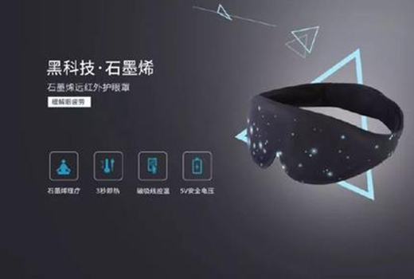

眼睛
眼睛是人类感官中最重要的器官，大脑中大约有80%的知识都是通过眼睛获取的。眼睛能辨别不同的颜色和亮度的光线，并将这些信息转变成神经信号，传送给大脑。


眼镜
眼镜是镶嵌在框架内的透镜镜片，戴在眼睛前方，以改善视力、保护眼睛或作装饰用途。镜可矫正多种视力问题，包括近视、远视、散光、老花或斜视、弱视等。
保健
眼睛是人类感观中最重要的器官，大脑中大约有一半的知识和记忆都是通过眼睛获取的。读书认字、看图赏画、看人物、欣赏美景等都要用到眼睛。由于视觉对人如此重要，所以每个人每隔一两年都应检查一次视力。
眼保健操
眼保健操是一群众性的运动项目，它可以提高人们的眼保健意识，调整眼及头部的血液循环，调节肌肉，改善眼的疲劳。

保健仪器
舒服到流眼泪，这款石墨烯发热眼罩，让你戴上就不想摘下来。
PS:石墨烯是目前世界上最轻、最薄、硬度最高、韧性最强的新型纳米材料，拥有超强导电导热性能，被誉为21世纪的“未来材料”。